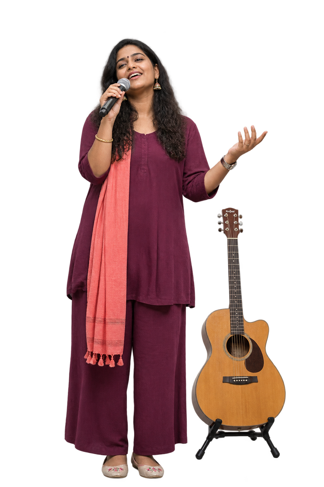
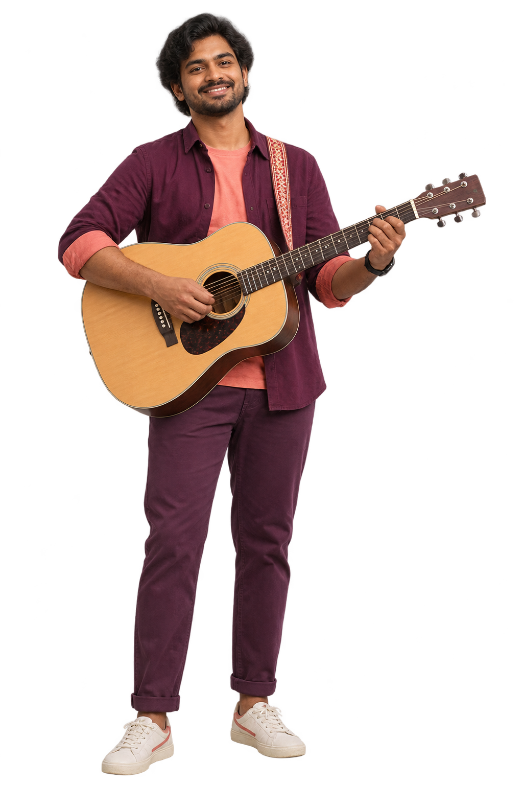
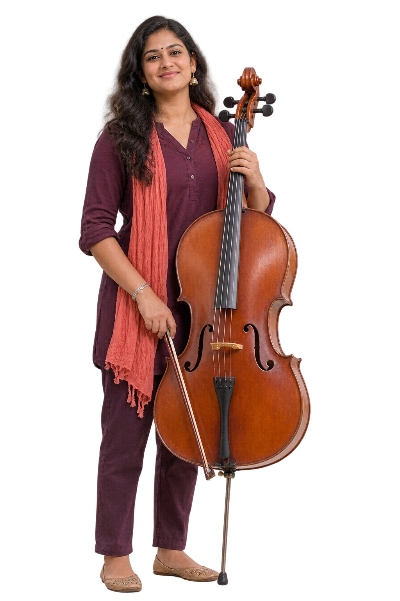
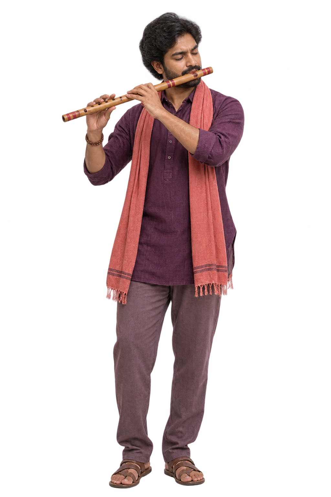
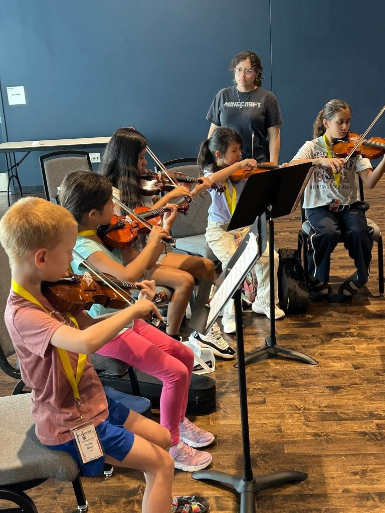
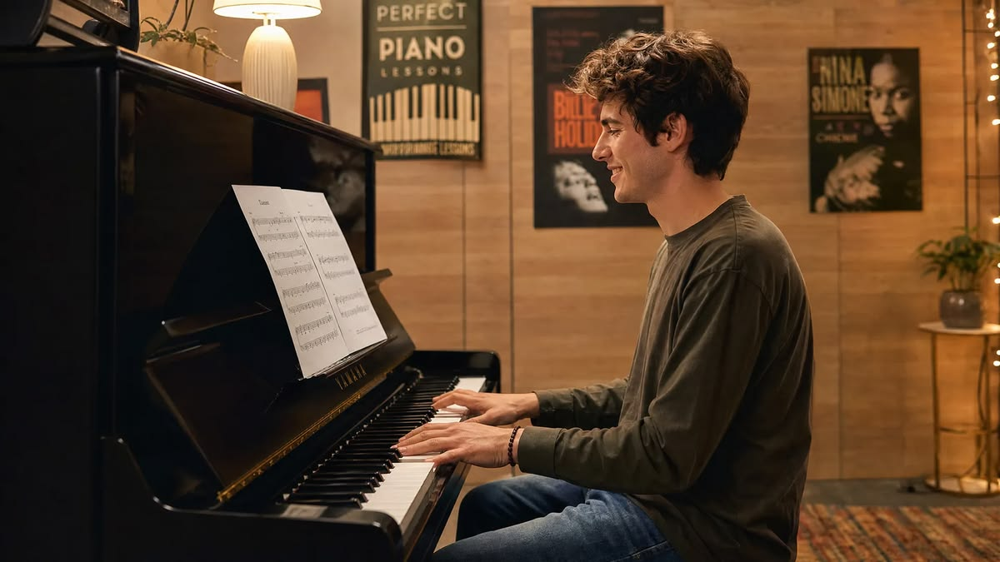
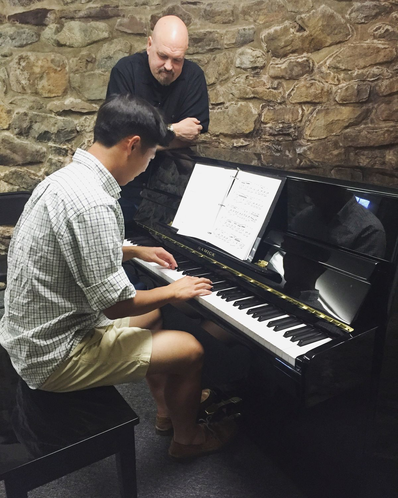

A fresh beginning
New to music? Start with achievable, practical foundations.
No perfect notes required. Just curiosity, a little courage and a sound that feels like you.




New to music? Start with achievable, practical foundations.
Return to an instrument with fresh ideas and patient guidance.
Build the technique and expression to take your music further.

Work through a song with your mentor, break down tricky passages and leave with one clear goal.
Try ten focused minutes: warm up, repeat the difficult phrase, then play something you enjoy.
Record a short take, note what improved and bring your questions to your next lesson.

Explore our illustrative instructor profiles and the approach behind every lesson.
Meet the mentors ↗
Yes. The academy concept welcomes kids, teens and adult learners.
Browse the four course pathways and use the enquiry form to share what inspires you.
It demonstrates enrolment, schedules, mentor notes and sample fee tracking on your device.